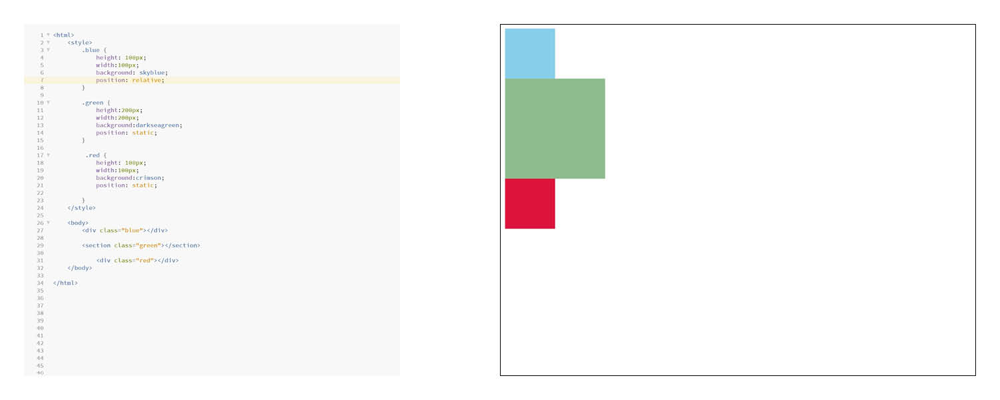
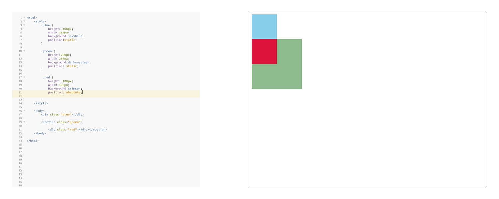
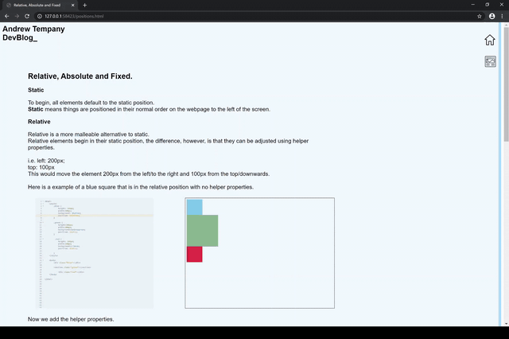

Relative, Absolute and Fixed.
Static
To begin, all elements default to the static position.
Static means things are positioned in their normal order on the webpage to the left of the screen.
Relative
Relative is a more malleable alternative to static.
Relative elements begin in their static position, the difference, however, is that they can be adjusted using helper properties.
i.e. left: 200px;
top: 100px
This would move the element 200px from the left/to the right
and 100px from the top/downwards.
Here is a example of a blue square that is in the relative position with no helper properties.

Now we add the helper properties.
Absolute
Absolute is similar to relative. the key difference is that instead of being relative to its static position, it is relative to its parent element. If left unchanged it will sit in the top-left of its parent element.
Here is a example of a red square that is in the absolute position with no helper properties.

Now we add a helper property to shift it to the right.
Fixed
Fixed elements are relative to the html document, not any other parent elements. the key thing to note with position: fixed; is that scrolling doesn't affect the position of the element in the viewport. The element will always stay on the screen.
An example of a fixed element is the menu in the top right corner of this page. I realised that you can clearly see this on your screen AFTER I went to the effort of making this gif. Good one Andy...
